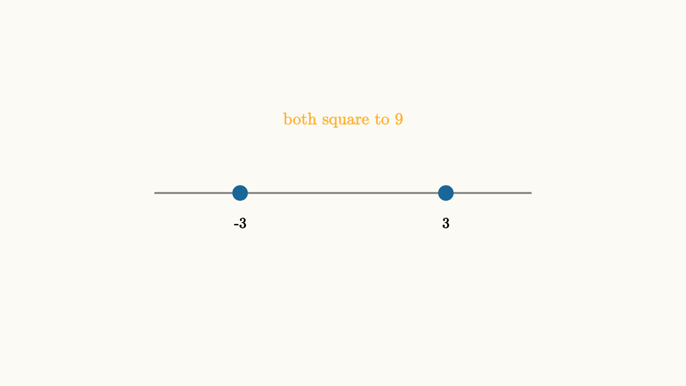

Equation Steps Can Create Fakes
Some algebra steps preserve solutions exactly. Others only preserve one direction of truth. That difference is the source of extraneous solutions and lost solutions.
Squaring is the classic example. If $a=b$, then $a^2=b^2$. The forward implication is valid. The reverse implication can fail because $a^2=b^2$ also allows $a=-b$.
So this step should be written as
not as an if and only if statement.

source
background = [0.985, 0.98, 0.955, 1]
camera = Camera(4b)
mesh diagram = block {
. stroke{GRAY, 2} Line(start: [-2.2, 0, 0], end: [2.2, 0, 0])
. center{[-1.2, 0, 0]} fill{BLUE} stroke{BLUE, 2} Circle(0.08)
. center{[1.2, 0, 0]} fill{BLUE} stroke{BLUE, 2} Circle(0.08)
. center{[-1.2, -0.35, 0]} color{BLACK} Text("-3", 0.62)
. center{[1.2, -0.35, 0]} color{BLACK} Text("3", 0.62)
. center{[0, 0.85, 0]} color{ORANGE} Text("both square to 9", 0.7)
}Consider
Squaring gives
Then
so
The candidates are $x=3$ and $x=-2$. Only $x=3$ works in the original equation. The value $-2$ solves the squared equation because $\sqrt{4}=2$ and $(-2)^2=4$, but it does not solve $\sqrt{x+6}=x$.
The check is not an optional courtesy. It is the final step that repairs a one-way move.
Lost solutions come from the opposite kind of danger. Dividing by an expression can erase the case where that expression equals zero. From
dividing by $x-2$ gives $x=3$. That answer is correct, but the method skipped the question $x-2=0$. A safer route is to move everything to one side:
Factor the shared term:
Now both candidates appear: $x=2$ and $x=3$. Both solve the original equation.
source
background = [0.985, 0.98, 0.955, 1]
camera = Camera(4b)
let Card = |txt, y, col| block {
. center{[0, y, 0]} fill{alpha{0.12} col} stroke{col, 2} Rect([3.8, 0.6])
. center{[0, y, 0]} color{BLACK} Text(txt, 0.62)
}
"square"
mesh work = Card("square root equation", 0.7, BLUE)
mesh warning = []
play Write(0.8)
warning = center{[0, -0.25, 0]} color{ORANGE} Text("squaring is one-way", 0.62)
play Fade(0.5)
work = [
Card("after squaring", 0.7, BLUE),
Card("factor, then check", -0.05, GREEN)
]
play Trans(1.0)
"check"
work = [
Card("x = 3 works", 0.45, GREEN),
Card("x = -2 is fake", -0.35, ORANGE)
]
warning = center{[0, -1.25, 0]} color{BLACK} Text("return to the original equation", 0.62)
play [Trans(1.0, [&work]), Fade(0.5, [&warning])]The rule is simple:
1. Reversible steps may be chained with $\iff$. 2. One-way steps produce candidates. 3. Candidates must be tested in the original equation. 4. Division by a variable expression should be replaced by factoring when possible.
This also applies in trigonometry. If you divide both sides by $\sin\theta$, you may lose angles where $\sin\theta=0$. If you square both sides of a trig equation, you may create angles with the wrong sign. When in doubt, keep factors visible and check candidates on the circle.
Algebra becomes calmer when the arrows are honest. The symbol work can be quick, but the logic should be explicit. Extraneous solutions are not mysterious errors. They are the natural cost of using a move that keeps truth in only one direction.